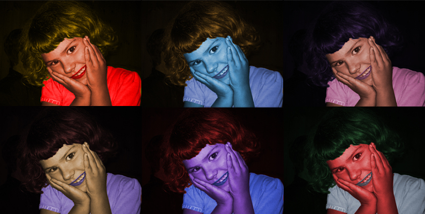

Vektorska grafika
Vježba 1: Font

Izrada svog fonta..
Vježba 2: Bezierova krivulja, precizno crtanje
Bezierova krivulja je parametarska krivulja definirana sa 4 točke i predstavlja temelj današnje vektorske grafike.
Vježba 3: Boja, transformacije
Multiplicija objektima nacrtanima sa alatom Pen.
Vježba 4: gradijenti, transparencija
Apliciranje različitih vrsta gradijenata (linearni, radijalni, mesh...) od dvije ili više boja.
Piksel grafika
Vježba 5: Koloriranje

Tehnike neinvazivnog koloriranja slike koje se može primijeniti na crno-bijele slike ili slike u boji kojima želimo promijeniti nijansu određenih područja.
Vježba 6: Koloriranje
Tehnike neinvazivnog koloriranja slike koje se može primijeniti na crno-bijele slike ili slike u boji kojima želimo promijeniti nijansu određenih područja.
Vježba 7: Fotomontaža

Kombiniranje više fotografija izrezivanjem dijelova različitih slika i spajanjem u jednu cjelinu.
Video
Vježba 8: Kinemagraf

Kinemagraf ili eng. cinemagraph je video isječak čija se sekvenca ponavlja u beskonačnost, najčešće u GIF formatu.